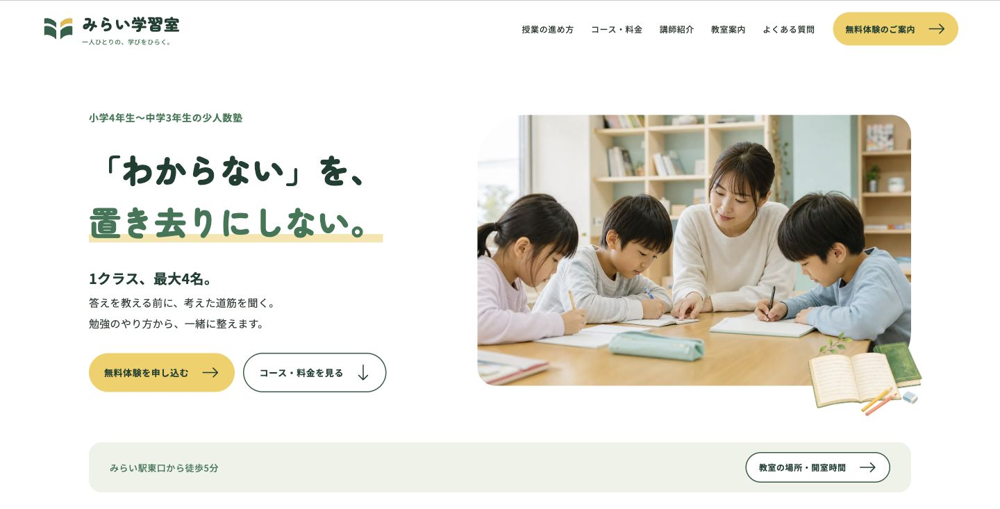
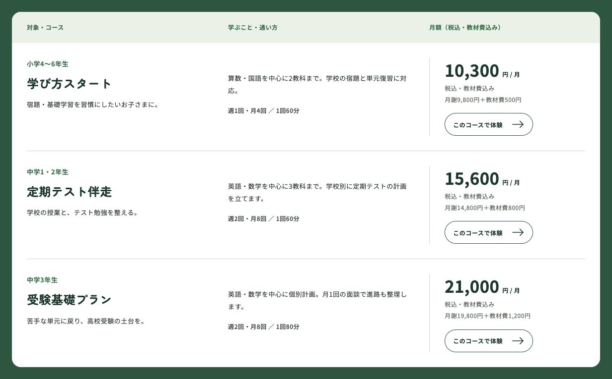
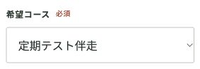

少人数塾のランディングページ
みらい学習室
コース比較から体験申込みまでをつなぐLP
ロゴ・教室の見せ方・料金比較・フォームの入力検証まで制作。保護者が選んだコースを申込み画面へ引き継ぎ、検討から入力までつながるLPにしました。
自主制作・架空案件 ／ 企画・情報設計・デザイン・HTML・CSS・JavaScript

ターゲット・ペルソナ
設計上の想定
- ターゲット
- 小学4年生〜中学3年生の保護者と子ども
- ペルソナ
- 子どもの学習のつまずきが気になり、費用と指導方針を確かめて体験を検討する保護者。

コースと料金の画面
月額でコースを比較
各コースは対象学年、学ぶ内容、回数、授業時間、月額を同じ行にまとめました。金額は税込・教材費込みの総額を大きく見せ、内訳も併記しています。
コースのボタンから体験フォームへ進むと、選んだコースを引き継ぎます。比較した内容をフォームでもう一度選び直す手間を減らしました。
料金表の実画面を見る制作の背景
親子それぞれの判断材料
保護者は対象学年・費用・指導方法を確認し、子どもは先生や授業の雰囲気を気にすると考えました。最初に少人数の教室写真と約束を見せ、そのあとに授業の例、コース・料金、講師、教室案内を置いています。
合格実績や架空の口コミに頼らず、授業のやりとりと通う条件を具体的に掲載しました。体験への案内と料金への案内は、どちらも輪郭のあるボタンにしています。
選択を引き継ぐフォーム
選んだコースを引き継ぐ
「定期テスト伴走で体験する」を押すと、フォームの希望コースに「定期テスト伴走」が選ばれます。ボタンの選択値をJavaScriptで反映し、入力の流れをつなげました。
下の画像は、実際にコースのボタンを押したあとの画面です。氏名やメールアドレスは未入力の状態で撮影しています。

ロゴからフォームまで
ロゴは開いた本をモチーフに、4つの形で少人数制の考え方を表しました。深い緑と黄色を軸に、教室写真と丸みのある文字を組み合わせています。
スマートフォンは画面全体に開くメニューを実装。体験フォームは必須項目ごとにエラーを表示し、入力確認まで試せます。デモでは個人情報の送信・保存は行いません。
制作範囲
制作概要
- 担当
- 企画・情報設計・ロゴ・デザイン・フロントエンド実装
- 構成
- 1ページ完結型LP
- 技術
- HTML / CSS / JavaScript / SVG
- 実装範囲
- 全画面メニュー、料金表、コース選択の引継ぎ、入力検証と完了表示。フォームは非送信デモです。
自主制作のため、体験申込み数や入会率などの実測成果はありません。
実際の画面と操作は、制作デモで確認できます。